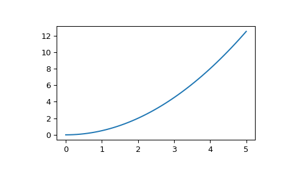

scipy.signal.lsim¶
-
scipy.signal.lsim(system, U, T, X0=None, interp=True)[source]¶ Simulate output of a continuous-time linear system.
- Parameters
- systeman instance of the LTI class or a tuple describing the system.
The following gives the number of elements in the tuple and the interpretation:
1: (instance of
lti)2: (num, den)
3: (zeros, poles, gain)
4: (A, B, C, D)
- Uarray_like
An input array describing the input at each time T (interpolation is assumed between given times). If there are multiple inputs, then each column of the rank-2 array represents an input. If U = 0 or None, a zero input is used.
- Tarray_like
The time steps at which the input is defined and at which the output is desired. Must be nonnegative, increasing, and equally spaced.
- X0array_like, optional
The initial conditions on the state vector (zero by default).
- interpbool, optional
Whether to use linear (True, the default) or zero-order-hold (False) interpolation for the input array.
- Returns
- T1D ndarray
Time values for the output.
- yout1D ndarray
System response.
- xoutndarray
Time evolution of the state vector.
Notes
If (num, den) is passed in for
system, coefficients for both the numerator and denominator should be specified in descending exponent order (e.g.s^2 + 3s + 5would be represented as[1, 3, 5]).Examples
Simulate a double integrator y’’ = u, with a constant input u = 1
>>> from scipy import signal >>> system = signal.lti([[0., 1.], [0., 0.]], [[0.], [1.]], [[1., 0.]], 0.) >>> t = np.linspace(0, 5) >>> u = np.ones_like(t) >>> tout, y, x = signal.lsim(system, u, t) >>> import matplotlib.pyplot as plt >>> plt.plot(t, y)
